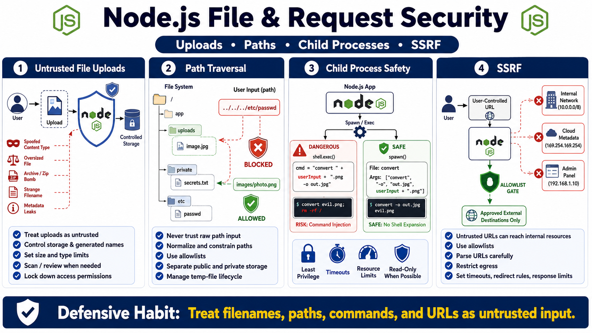

Files, Processes, and Server-Side Requests
Connecting to LMS... Progress: in progress

Narration
File handling deserves special care because file names, paths, content type claims, archives, and metadata can all be influenced by users or external systems. A file upload feature should treat the uploaded file as untrusted. The application should control storage location, generated names, size limits, allowed types, scanning or review requirements, and access permissions rather than trusting client-provided names or headers.
Path traversal occurs when input influences file access outside an intended directory. The defensive idea is to avoid using raw user input as a path, normalize and constrain paths carefully, use allowlists where possible, and separate public files from private internal storage. Temporary files should have predictable lifecycle management so sensitive data does not remain longer than intended.
Node.js can launch child processes, but unsafe command construction is dangerous. User-controlled input should not be concatenated into shell commands. Prefer APIs that pass arguments without shell interpretation, restrict what operations are allowed, and apply operating system permissions, timeouts, and resource limits. The application should not rely on one validation check as the only barrier before a system-level effect.
Server-side request forgery, or SSRF, is a risk when server-side URL fetching can be influenced to access unintended resources. The service may be able to reach internal networks, cloud metadata endpoints, admin panels, or services that users cannot reach directly. Safe outbound request controls include allowlists, URL parsing discipline, network egress restrictions, timeouts, response limits, and careful handling of redirects.